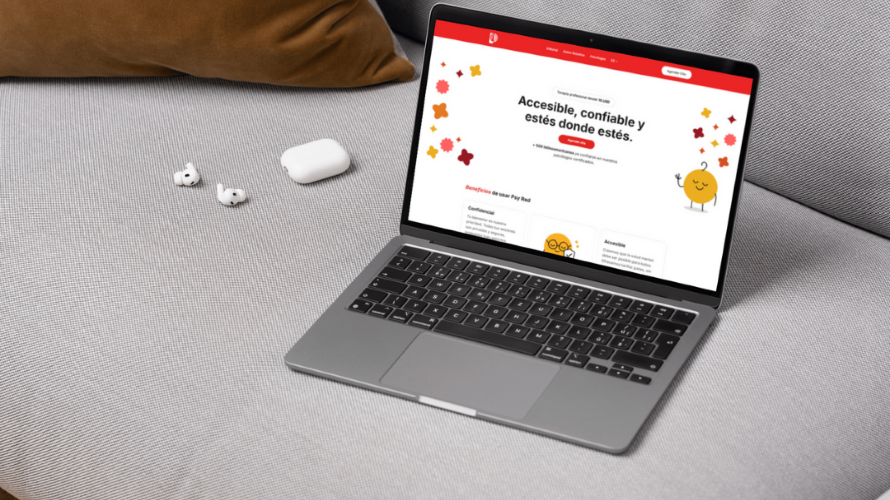
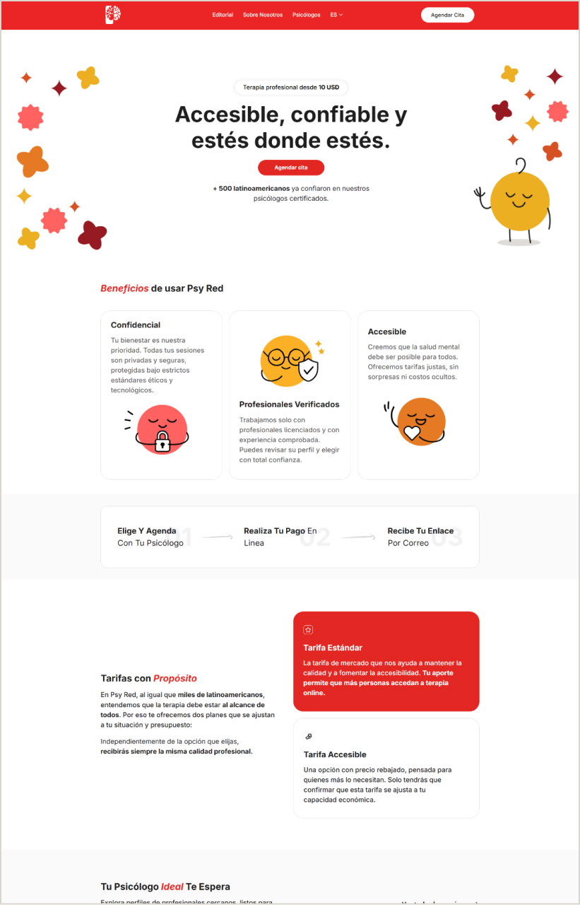
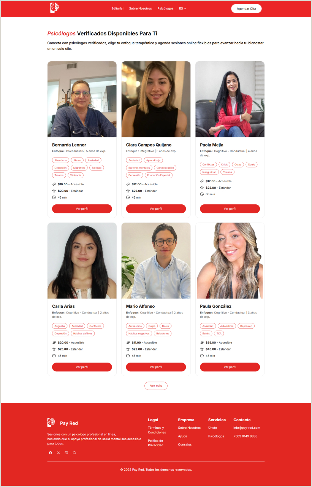
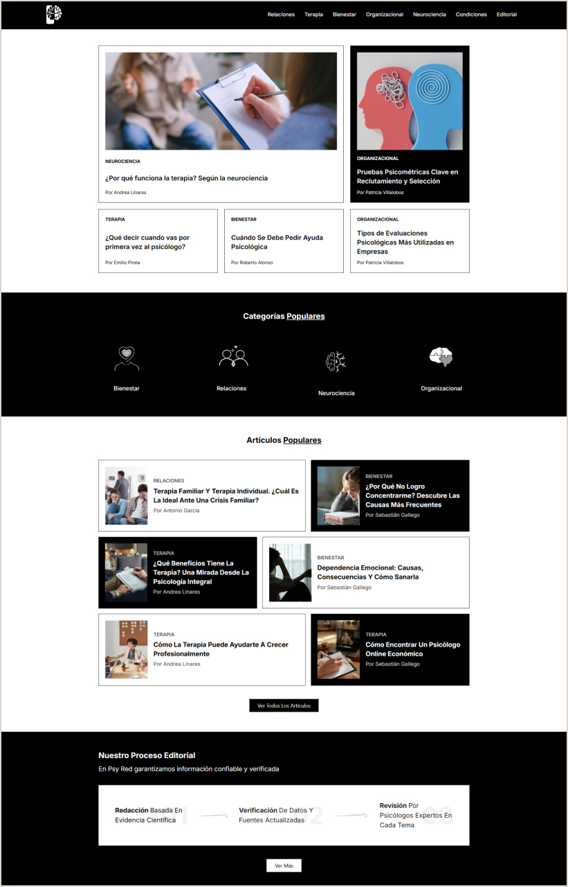
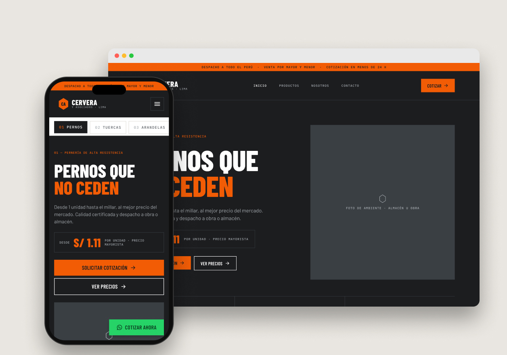

Psy Red
Redesign and development of the home page and catalog for a platform that connects people across Latin America with professional psychologists.
Role
UX/UI designer and WordPress developer
Duration
4 weeks
Type
Client project via Upwork
Tools
Figma, WordPress, WooCommerce, PHP, HTML, CSS

(01) Context and problem
The starting point
The site had no functional home page or modern design. It needed to present the psychologists briefly and clearly, and there was no page listing every available professional.
Goal
Let anyone find and book a psychologist from the home page, with no extra steps.
(02) Challenges
01
No premium tools
The client didn't have Elementor Pro, which limited how the proposed design could be built.
02
A carousel that also sells
It wasn't just visual: it had to plug into the WooCommerce checkout so sessions could be booked from each profile.
03
Lightweight and ready to grow
The site had to stay fast and ready for a growing catalog and blog.
(03) Process
From Figma to code
01
Figma proposals
I designed several home and catalog proposals; the ones closest to the client's vision were approved.
02
Custom carousel
I built it with PHP, HTML and CSS inside a lightweight plugin, without relying on paid tools.
03
WooCommerce integration
Each psychologist can be booked straight from the carousel, through the cart and checkout.
04
Psychologist catalog
Custom cards for each professional, consistent with the carousel's.
05
Scalable blog
A first version with 50 articles, designed to grow over time.
06
Optimization
Lighter images and better speed, without heavy plugins.
(04) Screens

Home

Catalog

Blog
(05) Results
01
Redesign approved and built
A dynamic, functional home page, now live.
02
True to the design
A carousel identical to the Figma proposal and integrated into checkout.
03
Fast and scalable
A lightweight site, ready to grow in catalog and content.
04
No extra costs
A flexible solution for a client who couldn't invest in premium tools.
(06) Learnings
A lightweight, well-thought-out solution can balance aesthetics, functionality and performance better than a paid tool.
This project was a key challenge in bringing UX/UI and WordPress development together. It let me go deeper into custom code as an alternative to paid tools, and reinforced the importance of designing for scalability.
Next project
